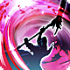

Souverain
Dirigeant charismatique, le Souverain guide ses alliés par la stratégie, l'inspiration et la puissance du verbe.
Envoûteur
Maître des malédictions et de l’art occulte, l’Envoûteur affaiblit l’esprit et le corps de ses ennemis à travers la puissance du son.
Impérial
Chevalier d’élite maniant une lame cinétique, l’Impérial écrase ses ennemis par des frappes surpuissantes au prix d’une maîtrise rigoureuse de son art.
Lansquenet
Guerrier polyvalent de la mêlée, le Lansquenet maîtrise l’art du combat offensif ou défensif, adaptant son style à l’arme qu’il brandit.
Mage guerrier
Chaman protecteur et guérisseur, le Mage Guerrier combine arts occultes et lame rituelle pour soutenir ses alliés et frapper au moment opportun.
Moine
Maître du Qi et du combat à mains nues, le Moine soigne ou frappe avec agilité, canalisant son énergie intérieure en mouvements précis et redoutables.
Nécromancien
Maître des esprits tourmentés, le Nécromancien invoque des spectres pour le protéger et canalise leur essence dans de sombres rituels.
Shogun
Stratège d’élite et meneur de front, le Shogun galvanise ses alliés tout en frappant l’ennemi avec une précision impitoyable.
Héraut
Manipulateur de miasme et maître des frappes opportunes, le Héraut affaiblit ses proies avant de les faucher dans un ballet spectral.
Dragoon
Sentinelle cuirassée, le Dragoon encaisse les coups pour ses alliés et élimine les menaces grâce à son bouclier massif et son canon dorsal.
Vagabond
Archer nomade et ami des bêtes, le Vagabond maîtrise les secrets du Labyrinthe et combat aux côtés d’un fidèle compagnon animal.
Troubadour
Artiste itinérant au pouvoir enchanteur, le Troubadour galvanise ses alliés par la musique, la poésie et la lumière de l’inspiration.